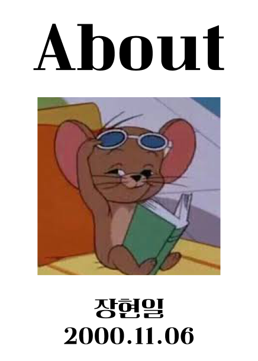

mobile
010-9820-9939
e-mail
jhi1324@naver.com


여러 웹 서비스를 이용하다 보면 원하는 정보 하나를 찾기 위해 몇 단계를 거쳐야 하거나, 원하지 않는 정보를 전달받는 경험을 자주 했습니다.
불편하다고
느끼면서도 그냥 넘어가던 것들이 쌓이면서 어떻게 하면 더 단순하고 효율적으로 만들 수 있을지를 자연스럽게 고민하게 되었습니다.
그 고민이 웹을 만드는
기준이
되었습니다. 복잡함을 덜어내고 사용자가 목적에만 집중할 수 있는 구조, 만드는 사람도 유지하기 쉬운 탄탄한 설계를 지향합니다.
린 프로세스를 기반으로
AI를
활용해 가설을 세우고 검증하며, 근거 있는 방향으로 화면을 완성해 나가고 있습니다.